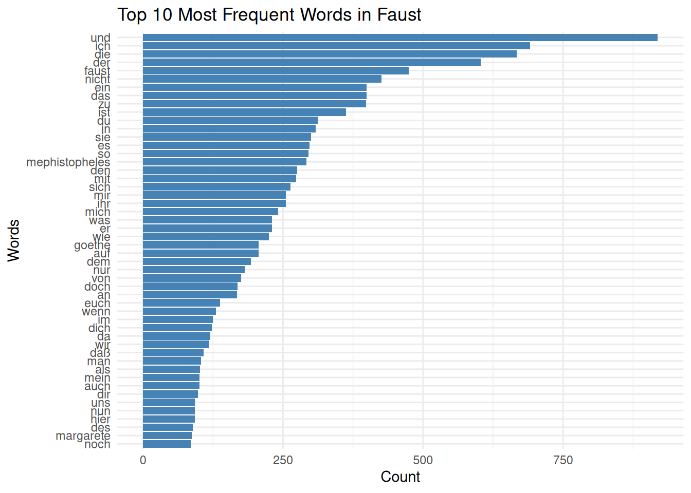

fruits <- c("Apple", "Banana", "Orange", "Lemon", "Blackberry", "Peach", "annona", "peach")
grep("e", fruits)[1] 1 3 4 5 6 8fruits[grep("e", fruits)][1] "Apple" "Orange" "Lemon" "Blackberry" "Peach"
[6] "peach" October 2, 2025
Regular expressions is a powerful language for describing patterns within strings. Mostly we need that for extracting certain strings for filtering or manipulation. See R for Data Science for a whole chapter on this. Also, speaking from experience, ChatGPT is a great resource on this, still it might be helpful to understand the underlying syntax a bit better.
In base-R we can use grep() for extracting certain patterns from character vectors:
fruits <- c("Apple", "Banana", "Orange", "Lemon", "Blackberry", "Peach", "annona", "peach")
grep("e", fruits)[1] 1 3 4 5 6 8[1] "Apple" "Orange" "Lemon" "Blackberry" "Peach"
[6] "peach" In the tidyverse, we can use str_detect(), which is also easily pipeable:
── Attaching core tidyverse packages ──────────────────────── tidyverse 2.0.0 ──
✔ dplyr 1.1.4 ✔ readr 2.1.5
✔ forcats 1.0.0 ✔ stringr 1.5.1
✔ ggplot2 3.5.1 ✔ tibble 3.2.1
✔ lubridate 1.9.4 ✔ tidyr 1.3.1
✔ purrr 1.0.2
── Conflicts ────────────────────────────────────────── tidyverse_conflicts() ──
✖ dplyr::filter() masks stats::filter()
✖ dplyr::lag() masks stats::lag()
ℹ Use the conflicted package (<http://conflicted.r-lib.org/>) to force all conflicts to become errors Sepal.Length Sepal.Width Petal.Length Petal.Width Species
1 5.1 3.5 1.4 0.2 setosa
2 4.9 3.0 1.4 0.2 setosa
3 4.7 3.2 1.3 0.2 setosa
4 4.6 3.1 1.5 0.2 setosa
5 5.0 3.6 1.4 0.2 setosa
6 5.4 3.9 1.7 0.4 setosa[1] "Appla" "Banana" "Oranga" "Lamon" "Blackbarry"
[6] "Paach" "annona" "paach" Or, in tidyverse:
[1] "Appla" "Banana" "Oranga" "Lamon" "Blackbarry"
[6] "Paach" "annona" "paach" With stringr::str_view() we can see how the chosen characters look without having to use grep():
Letters and numbers just represent themselves, but most punctuation characters have their own meaning:
.The point . matches any character. So if we want to extract all fruits with an e and another character following we can do that like so:
Of course we can use multiple points if necessary:
?With ? we can make a pattern optional. In the following example, any letter can preceed or follow the m:
+With the + the pattern has to match at least once (or more often):
*The * makes any number of following matches optional, so the pattern can be repeated any number of times, including 0:
[]This creates a character class, so any of the included characters can match (or not match, if we put a ^ in front):
[2] │ B<an><an>a
[3] │ Or<an>ge
[5] │ Bl<ac>kberry
[6] │ Pe<ac>h
[7] │ <an>nona
[8] │ pe<ac>hThis selects all strings including an a followed by either c or n. Alternatively, we can also choose all e followed by a consonant:
Even better, if we want to match all letters:
… followed by a number:
… also starting with a letter:
|This is our ‘or’-symbol:
^Matches the start:
$Matches the end:
\d: Match digit\D: Match anything but digits\s: Match any whitespace\S: Match anything but whitespace\w: Match any “word”-character (letters and numbers)\W: Match any “non-word”-character.tolower() might be helpful to convert Upper case letters to lower case letters.If we want to use the actual character instead of its meta-function, we have to escape it (with two \):
For matching a \, we need to escape it in the string first, and then match it with four \:
{}{} allows us to specify the number of matches we are looking for:
Or a minimum number:
()() can help us to clarify how the meta-expressions should relate to each other:
In the second example, the {2} relates only to the n, in the first to the an pattern.
Using paranthesis, we can also create groups which we can use later on in the regex:
This selects all fruits that have a double letter. With the \\1 we use the content of the first (),which can be any letter in this example (but has to be the same as in the first selection). We can also use multiple groups:
ing. from string::sentences. [1] "The source of the huge river is the clear spring."
[2] "A pot of tea helps to pass the evening."
[3] "It snowed, rained, and hailed the same morning."
[4] "What joy there is in living."
[5] "The pearl was worn in a thin silver ring."
[6] "Bail the boat to stop it from sinking."
[7] "The map had an X that meant nothing."
[8] "Try to trace the fine lines of the painting."
[9] "We now have a new base for shipping."
[10] "The black trunk fell from the landing."
[11] "Set the piece here and say nothing."
[12] "The first part of the plan needs changing." sentences.str_extract_all(sentences, "\\w") %>%
unlist() %>%
tolower() %>%
table() %>%
as.data.frame() %>%
arrange(desc(Freq)) . Freq
1 e 3050
2 t 2350
3 a 1751
4 h 1655
5 s 1585
6 o 1562
7 r 1356
8 n 1220
9 i 1204
10 l 999
11 d 949
12 c 604
13 w 601
14 f 563
15 u 528
16 p 491
17 g 425
18 m 402
19 b 370
20 k 327
21 y 299
22 v 140
23 j 39
24 z 30
25 x 27
26 q 18sentences that include a double letter. [1] "The birch canoe slid on the smooth planks."
[2] "Glue the sheet to the dark blue background."
[3] "It's easy to tell the depth of a well."
[4] "The hogs were fed chopped corn and garbage."
[5] "A large size in stockings is hard to sell."
[6] "Kick the ball straight and follow through."
[7] "Help the woman get back to her feet."
[8] "A pot of tea helps to pass the evening."
[9] "The soft cushion broke the man's fall."
[10] "The salt breeze came across from the sea."
[11] "The girl at the booth sold fifty bonds."
[12] "The small pup gnawed a hole in the sock."
[13] "The fish twisted and turned on the bent hook."
[14] "Press the pants and sew a button on the vest."
[15] "The beauty of the view stunned the young boy."
[16] "Her purse was full of useless trash."
[17] "The colt reared and threw the tall rider."
[18] "Wipe the grease off his dirty face."
[19] "The stray cat gave birth to kittens."
[20] "The meal was cooked before the bell rang."
[21] "The ship was torn apart on the sharp reef."
[22] "Sickness kept him home the third week."
[23] "The wide road shimmered in the hot sun."
[24] "The lazy cow lay in the cool grass."
[25] "The rope will bind the seven books at once."
[26] "Mesh wire keeps chicks inside."
[27] "The frosty air passed through the coat."
[28] "The crooked maze failed to fool the mouse."
[29] "Adding fast leads to wrong sums."
[30] "A saw is a tool used for making boards."
[31] "The wagon moved on well oiled wheels."
[32] "March the soldiers past the next hill."
[33] "A cup of sugar makes sweet fudge."
[34] "A small creek cut across the field."
[35] "Cars and busses stalled in snow drifts."
[36] "The set of china hit the floor with a crash."
[37] "The walled town was seized without a fight."
[38] "The lease ran out in sixteen weeks."
[39] "A tame squirrel makes a nice pet."
[40] "The horn of the car woke the sleeping cop."
[41] "The fruit peel was cut in thick slices."
[42] "The Navy attacked the big task force."
[43] "See the cat glaring at the scared mouse."
[44] "The hat brim was wide and too droopy."
[45] "The grass curled around the fence post."
[46] "Always close the barn door tight."
[47] "The slush lay deep along the street."
[48] "A pound of sugar costs more than eggs."
[49] "The play seems dull and quite stupid."
[50] "The bill was paid every third week."
[51] "Open the crate but don't break the glass."
[52] "Add the sum to the product of these three."
[53] "The ripe taste of cheese improves with age."
[54] "Act on these orders with great speed."
[55] "The bark of the pine tree was shiny and dark."
[56] "Leaves turn brown and yellow in the fall."
[57] "The pennant waved when the wind blew."
[58] "Hemp is a weed found in parts of the tropics."
[59] "Type out three lists of orders."
[60] "The harder he tried the less he got done."
[61] "The boss ran the show with a watchful eye."
[62] "The cup cracked and spilled its contents."
[63] "Paste can cleanse the most dirty brass."
[64] "The slang word for raw whiskey is booze."
[65] "The wharf could be seen at the farther shore."
[66] "Feel the heat of the weak dying flame."
[67] "The tiny girl took off her hat."
[68] "A cramp is no small danger on a swim."
[69] "Two plus seven is less than ten."
[70] "The glow deepened in the eyes of the sweet girl."
[71] "Clothes and lodging are free to new men."
[72] "Guess the result from the first scores."
[73] "Pure bred poodles have curls."
[74] "The tree top waved in a graceful way."
[75] "The spot on the blotter was made by green ink."
[76] "Mud was spattered on the front of his white shirt."
[77] "The empty flask stood on the tin tray."
[78] "A speedy man can beat this track mark."
[79] "The coffee stand is too high for the couch."
[80] "The pencils have all been used."
[81] "Drop the two when you add the figures."
[82] "Wood is best for making toys and blocks."
[83] "The office paint was a dull, sad tan."
[84] "He knew the skill of the great young actress."
[85] "A rag will soak up spilled water."
[86] "A shower of dirt fell from the hot pipes."
[87] "Steam hissed from the broken valve."
[88] "The child almost hurt the small dog."
[89] "Torn scraps littered the stone floor."
[90] "Sunday is the best part of the week."
[91] "The doctor cured him with these pills."
[92] "The new girl was fired today at noon."
[93] "They felt gay when the ship arrived in port."
[94] "Add the store's account to the last cent."
[95] "Acid burns holes in wool cloth."
[96] "Eight miles of woodland burned to waste."
[97] "The third act was dull and tired the players."
[98] "A young child should not suffer fright."
[99] "Add the column and put the sum here."
[100] "We admire and love a good cook."
[101] "There the flood mark is ten inches."
[102] "The fruit of a fig tree is apple shaped."
[103] "The paper box is full of thumb tacks."
[104] "Sell your gift to a buyer at a good gain."
[105] "The petals fall with the next puff of wind."
[106] "Bring your best compass to the third class."
[107] "The brown house was on fire to the attic."
[108] "A blue crane is a tall wading bird."
[109] "A fresh start will work such wonders."
[110] "The hostess taught the new maid to serve."
[111] "He wrote his last novel there at the inn."
[112] "Even the worst will beat his low score."
[113] "The loss of the second ship was hard to take."
[114] "The fly made its way along the wall."
[115] "Do that with a wooden stick."
[116] "The doorknob was made of bright clean brass."
[117] "The wreck occurred by the bank on Main Street."
[118] "Schools for ladies teach charm and grace."
[119] "The lamp shone with a steady green flame."
[120] "They took the axe and the saw to the forest."
[121] "The ancient coin was quite dull and worn."
[122] "The shaky barn fell with a loud crash."
[123] "Jazz and swing fans like fast music."
[124] "Rake the rubbish up and then burn it."
[125] "Slash the gold cloth into fine ribbons."
[126] "They are pushed back each time they attack."
[127] "Whitings are small fish caught in nets."
[128] "Jerk the rope and the bell rings weakly."
[129] "A waxed floor makes us lose balance."
[130] "On the islands the sea breeze is soft and mild."
[131] "The play began as soon as we sat down."
[132] "This will lead the world to more sound and fury."
[133] "Add salt before you fry the egg."
[134] "The birch looked stark white and lonesome."
[135] "The box is held by a bright red snapper."
[136] "To make pure ice, you freeze water."
[137] "The first worm gets snapped early."
[138] "Jump the fence and hurry up the bank."
[139] "Yell and clap as the curtain slides back."
[140] "They are men who walk the middle of the road."
[141] "In some form or other we need fun."
[142] "The prince ordered his head chopped off."
[143] "Ducks fly north but lack a compass."
[144] "Fruit flavors are used in fizz drinks."
[145] "These pills do less good than others."
[146] "Canned pears lack full flavor."
[147] "Carry the pail to the wall and spill it there."
[148] "The rude laugh filled the empty room."
[149] "High seats are best for football fans."
[150] "A dash of pepper spoils beef stew."
[151] "A zestful food is the hot-cross bun."
[152] "The horse trotted around the field at a brisk pace."
[153] "The red tape bound the smuggled food."
[154] "Look in the corner to find the tan shirt."
[155] "The cold drizzle will halt the bond drive."
[156] "The junk yard had a mouldy smell."
[157] "The flint sputtered and lit a pine torch."
[158] "All sat frozen and watched the screen."
[159] "To reach the end he needs much courage."
[160] "A ridge on a smooth surface is a bump or flaw."
[161] "Hedge apples may stain your hands green."
[162] "The mute muffled the high tones of the horn."
[163] "The heap of fallen leaves was set on fire."
[164] "His shirt was clean but one button was gone."
[165] "The barrel of beer was a brew of malt and hops."
[166] "The plant grew large and green in the window."
[167] "The beam dropped down on the workman's head."
[168] "Pink clouds floated with the breeze."
[169] "She danced like a swan, tall and graceful."
[170] "The tube was blown and the tire flat and useless."
[171] "It is late morning on the old wall clock."
[172] "Let's all join as we sing the last chorus."
[173] "The last switch cannot be turned off."
[174] "The fight will end in just six minutes."
[175] "The store walls were lined with colored frocks."
[176] "The peace league met to discuss their plans."
[177] "The quick fox jumped on the sleeping cat."
[178] "The nozzle of the fire hose was bright brass."
[179] "Screw the round cap on as tight as needed."
[180] "Fill the ink jar with sticky glue."
[181] "We need grain to keep our mules healthy."
[182] "The crunch of feet in the snow was the only sound."
[183] "The copper bowl shone in the sun's rays."
[184] "Boards will warp unless kept dry."
[185] "The plush chair leaned against the wall."
[186] "Glass will clink when struck by metal."
[187] "Bathe and relax in the cool green grass."
[188] "Nine rows of soldiers stood in a line."
[189] "The beach is dry and shallow at low tide."
[190] "The kitten chased the dog down the street."
[191] "Pages bound in cloth make a book."
[192] "Women form less than half of the group."
[193] "A gem in the rough needs work to polish."
[194] "He used the lathe to make brass objects."
[195] "The clan gathered on each dull night."
[196] "Tack the strip of carpet to the worn floor."
[197] "Each penny shone like new."
[198] "The man went to the woods to gather sticks."
[199] "The logs fell and tumbled into the clear stream."
[200] "Brass rings are sold by these natives."
[201] "It takes a good trap to capture a bear."
[202] "Feed the white mouse some flower seeds."
[203] "The thaw came early and freed the stream."
[204] "He took the lead and kept it the whole distance."
[205] "The key you designed will fit the lock."
[206] "Plead to the council to free the poor thief."
[207] "Better hash is made of rare beef."
[208] "Tend the sheep while the dog wanders."
[209] "A sash of gold silk will trim her dress."
[210] "A siege will crack the strong defense."
[211] "Grape juice and water mix well."
[212] "Fake stones shine but cost little."
[213] "Much of the story makes good sense."
[214] "A lathe cuts and trims any wood."
[215] "His hip struck the knee of the next player."
[216] "The stale smell of old beer lingers."
[217] "The desk was firm on the shaky floor."
[218] "Beef is scarcer than some lamb."
[219] "Raise the sail and steer the ship northward."
[220] "No cement will hold hard wood."
[221] "We now have a new base for shipping."
[222] "The sheep were led home by a dog."
[223] "Three for a dime, the young peddler cried."
[224] "The sense of smell is better than that of touch."
[225] "No hardship seemed to make him sad."
[226] "The news struck doubt into restless minds."
[227] "Once we stood beside the shore."
[228] "A chink in the wall allowed a draft to blow."
[229] "He takes the oath of office each March."
[230] "The sand drifts over the sills of the old house."
[231] "The point of the steel pen was bent and twisted."
[232] "There is a lag between thought and act."
[233] "Seed is needed to plant the spring corn."
[234] "The chap slipped into the crowd and was lost."
[235] "Hats are worn to tea and not to dinner."
[236] "Screen the porch with woven straw mats."
[237] "This horse will nose his way to the finish."
[238] "The dry wax protects the deep scratch."
[239] "He picked up the dice for a second roll."
[240] "These coins will be needed to pay his debt."
[241] "The nag pulled the frail cart along."
[242] "The smell of burned rags itches my nose."
[243] "New pants lack cuffs and pockets."
[244] "The marsh will freeze when cold enough."
[245] "The bloom of the rose lasts a few days."
[246] "Bottles hold four kinds of rum."
[247] "He wheeled the bike past the winding road."
[248] "A clean neck means a neat collar."
[249] "The couch cover and hall drapes were blue."
[250] "The stems of the tall glasses cracked and broke."
[251] "The wall phone rang loud and often."
[252] "The clothes dried on a thin wooden rack."
[253] "The cleat sank deeply into the soft turf."
[254] "The bills were mailed promptly on the tenth of the month."
[255] "To have is better than to wait and hope."
[256] "The price is fair for a good antique clock."
[257] "The bunch of grapes was pressed into wine."
[258] "He sent the figs, but kept the ripe cherries."
[259] "The hinge on the door creaked with old age."
[260] "The screen before the fire kept in the sparks."
[261] "Fly by night and you waste little time."
[262] "Thick glasses helped him read the print."
[263] "The chair looked strong but had no bottom."
[264] "A fur muff is stylish once more."
[265] "The tin box held priceless stones."
[266] "We need an end of all such matter."
[267] "The case was puzzling to the old and wise."
[268] "The youth drove with zest, but little skill."
[269] "Five years he lived with a shaggy dog."
[270] "Crack the walnut with your sharp side teeth."
[271] "He offered proof in the form of a large chart."
[272] "Send the stuff in a thick paper bag."
[273] "The three story house was built of stone."
[274] "In the rear of the ground floor was a large passage."
[275] "Oats are a food eaten by horse and man."
[276] "Their eyelids droop for want of sleep."
[277] "Tuck the sheet under the edge of the mat."
[278] "We like to see clear weather."
[279] "The work of the tailor is seen on each side."
[280] "Take a chance and win a china doll."
[281] "The square wooden crate was packed to be shipped."
[282] "The dusty bench stood by the stone wall."
[283] "We dress to suit the weather of most days."
[284] "A bowl of rice is free with chicken stew."
[285] "The water in this well is a source of good health."
[286] "Take shelter in this tent, but keep still."
[287] "That guy is the writer of a few banned books."
[288] "The little tales they tell are false."
[289] "The door was barred, locked, and bolted as well."
[290] "Ripe pears are fit for a queen's table."
[291] "The kite dipped and swayed, but stayed aloft."
[292] "The pleasant hours fly by much too soon."
[293] "The room was crowded with a wild mob."
[294] "This strong arm shall shield your honor."
[295] "The beetle droned in the hot June sun."
[296] "Press the pedal with your left foot."
[297] "The black trunk fell from the landing."
[298] "The bank pressed for payment of the debt."
[299] "A strong bid may scare your partner stiff."
[300] "Even a just cause needs power to win."
[301] "Peep under the tent and see the clowns."
[302] "A thing of small note can cause despair."
[303] "Flood the mails with requests for this book."
[304] "A thick coat of black paint covered all."
[305] "He wrote his name boldly at the top of the sheet."
[306] "Dill pickles are sour but taste fine."
[307] "Either mud or dust are found at all times."
[308] "If you mumble your speech will be lost."
[309] "At night the alarm roused him from a deep sleep."
[310] "Fill your pack with bright trinkets for the poor."
[311] "The small red neon lamp went out."
[312] "Clams are small, round, soft, and tasty."
[313] "Breathe deep and smell the piny air."
[314] "It matters not if he reads these words or those."
[315] "A toad and a frog are hard to tell apart."
[316] "A break in the dam almost caused a flood."
[317] "Paint the sockets in the wall dull green."
[318] "The child crawled into the dense grass."
[319] "Trample the spark, else the flames will spread."
[320] "A round hole was drilled through the thin board."
[321] "Footprints showed the path he took up the beach."
[322] "Prod the old mule with a crooked stick."
[323] "It is a band of steel three inches wide."
[324] "It was hidden from sight by a mass of leaves and shrubs."
[325] "The weight of the package was seen on the high scale."
[326] "Wake and rise, and step into the green outdoors."
[327] "The green light in the brown box flickered."
[328] "The brass tube circled the high wall."
[329] "Hold the hammer near the end to drive the nail."
[330] "They took their kids from the public school."
[331] "Drive the screw straight into the wood."
[332] "Keep the hatch tight and the watch constant."
[333] "Paper will dry out when wet."
[334] "A sullen smile gets few friends."
[335] "Slide the tray across the glass top."
[336] "Light maple makes for a swell room."
[337] "Dull stories make her laugh."
[338] "A stiff cord will do to fasten your shoe."
[339] "Choose between the high road and the low."
[340] "A plea for funds seems to come again."
[341] "He lent his coat to the tall gaunt stranger."
[342] "There is a strong chance it will happen once more."
[343] "Greet the new guests and leave quickly."
[344] "Sweet words work better than fierce."
[345] "A thin stripe runs down the middle."
[346] "The ram scared the school children off."
[347] "The team with the best timing looks good."
[348] "The farmer swapped his horse for a brown ox."
[349] "Sit on the perch and tell the others what to do."
[350] "A steep trail is painful for our feet."
[351] "Green moss grows on the northern side."
[352] "Tea in thin china has a sweet taste."
[353] "Pitch the straw through the door of the stable."
[354] "The latch on the back gate needed a nail."
[355] "The goose was brought straight from the old market."
[356] "A whiff of it will cure the most stubborn cold."
[357] "She flaps her cape as she parades the street."
[358] "The loss of the cruiser was a blow to the fleet."
[359] "Loop the braid to the left and then over."
[360] "Calves thrive on tender spring grass."
[361] "Post no bills on this office wall."
[362] "Tear a thin sheet from the yellow pad."
[363] "A cruise in warm waters in a sleek yacht is fun."
[364] "It was done before the boy could see it."
[365] "Crouch before you jump or miss the mark."
[366] "The square peg will settle in the round hole."
[367] "Poached eggs and tea must suffice."
[368] "Bad nerves are jangled by a door slam."
[369] "Ship maps are different from those for planes."
[370] "Dimes showered down from all sides."
[371] "The horse balked and threw the tall rider."
[372] "The hitch between the horse and cart broke."
[373] "The roof should be tilted at a sharp slant."
[374] "A smatter of French is worse than none."
[375] "The mule trod the treadmill day and night."
[376] "Cod is the main business of the north shore."
[377] "Cap the jar with a tight brass cover."
[378] "The poor boy missed the boat again."
[379] "A round mat will cover the dull spot."
[380] "The first part of the plan needs changing."
[381] "A good book informs of what we ought to know."
[382] "The mail comes in three batches per day."
[383] "You cannot brew tea in a cold pot."
[384] "See the player scoot to third base."
[385] "Slide the bill between the two leaves."
[386] "We don't like to admit our small faults."
[387] "Dig deep in the earth for pirate's gold."
[388] "A flat pack takes less luggage space."
[389] "Green ice frosted the punch bowl."
[390] "A stuffed chair slipped from the moving van."
[391] "The stitch will serve but needs to be shortened."
[392] "A thin book fits in the side pocket."
[393] "The gloss on top made it unfit to read."
[394] "The hail pattered on the burnt brown grass."
[395] "Seven seals were stamped on great sheets."
[396] "Our troops are set to strike heavy blows."
[397] "The store was jammed before the sale could start."
[398] "It was a bad error on the part of the new judge."
[399] "One step more and the board will collapse."
[400] "The pot boiled but the contents failed to jell."
[401] "The baby puts his right foot in his mouth."
[402] "The streets are narrow and full of sharp turns."
[403] "Open your book to the first page."
[404] "Fish evade the net and swim off."
[405] "Dip the pail once and let it settle."
[406] "Will you please answer that phone."
[407] "The big red apple fell to the ground."
[408] "He sent the boy on a short errand."
[409] "Leave now and you will arrive on time."
[410] "The corner store was robbed last night."
[411] "A gold ring will please most any girl."
[412] "The long journey home took a year."
[413] "A pink shell was found on the sandy beach."
[414] "Small children came to see him."
[415] "The grass and bushes were wet with dew."
[416] "She called his name many times."
[417] "When you hear the bell, come quickly." [1] │ The birch canoe slid on the sm<oo>th planks.
[2] │ Glue the sh<ee>t to the dark blue background.
[3] │ It's easy to te<ll> the depth of a we<ll>.
[8] │ The hogs were fed cho<pp>ed corn and garbage.
[10] │ A large size in stockings is hard to se<ll>.
[14] │ Kick the ba<ll> straight and fo<ll>ow through.
[15] │ Help the woman get back to her f<ee>t.
[16] │ A pot of tea helps to pa<ss> the evening.
[18] │ The soft cushion broke the man's fa<ll>.
[19] │ The salt br<ee>ze came acro<ss> from the sea.
[20] │ The girl at the b<oo>th sold fifty bonds.
[21] │ The sma<ll> pup gnawed a hole in the sock.
[22] │ The fish twisted and turned on the bent h<oo>k.
[23] │ Pre<ss> the pants and sew a bu<tt>on on the vest.
[25] │ The beauty of the view stu<nn>ed the young boy.
[27] │ Her purse was fu<ll> of usele<ss> trash.
[28] │ The colt reared and threw the ta<ll> rider.
[34] │ Wipe the grease o<ff> his dirty face.
[37] │ The stray cat gave birth to ki<tt>ens.
[39] │ The meal was c<oo>ked before the be<ll> rang.
... and 397 moreall in sentences.faust.txt. Plot the 50 most common words in Goethes Faust.Use readLines for reading in .txt files.
You might want to look in the examples of the str_extract_all() documentation. It might help with extracting words!
faust <- readLines(here::here("docs", "r_sig", "25_02_10_regex", "faust.txt"), warn = FALSE)
word_count <- str_extract_all(faust, boundary("word")) %>%
unlist()
word_count <- tolower(word_count) %>%
table() %>%
as.data.frame() %>%
arrange(desc(Freq)) # Sorting by frequency
colnames(word_count) <- c("Word", "Count")
# Convert Word column to character for proper sorting
word_count$Word <- as.character(word_count$Word)
# Plot the top 50 most frequent words
ggplot(word_count %>% head(50), aes(x = reorder(Word, Count), y = Count)) +
geom_col(fill = "steelblue") +
coord_flip() + # Flip for better readability
theme_minimal() +
labs(title = "Top 10 Most Frequent Words in Faust",
x = "Words",
y = "Count")
text <- "Hello Team,
Please reach out to John at john.doe96@example.com for project updates. If you have any financial queries, contact Sarah at sarah_finance@company.org.
For general inquiries, you can email info@business.net or our HR department at hr-department@enterprise.co.uk.
Best regards,
Admin Team (admin@corporate.com)"Image by verdian chua on Unsplash.↩︎